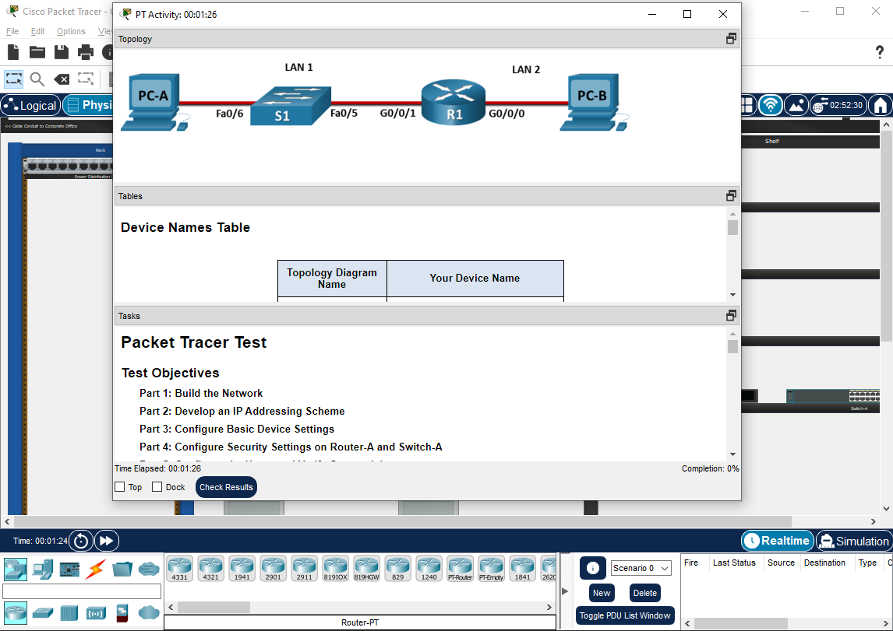
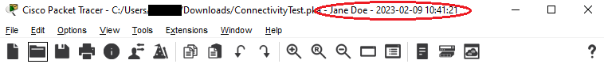
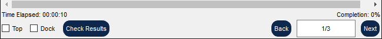
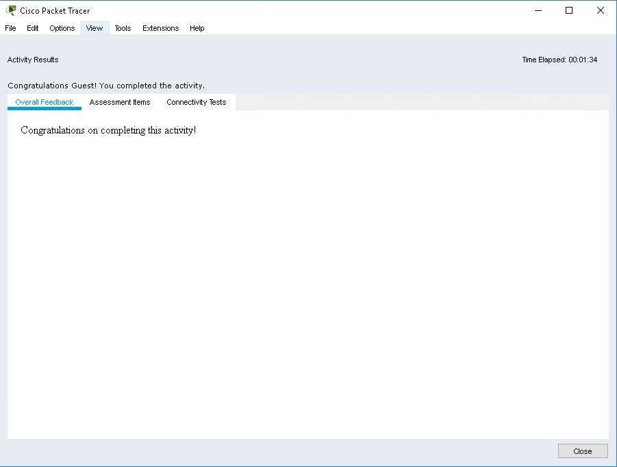
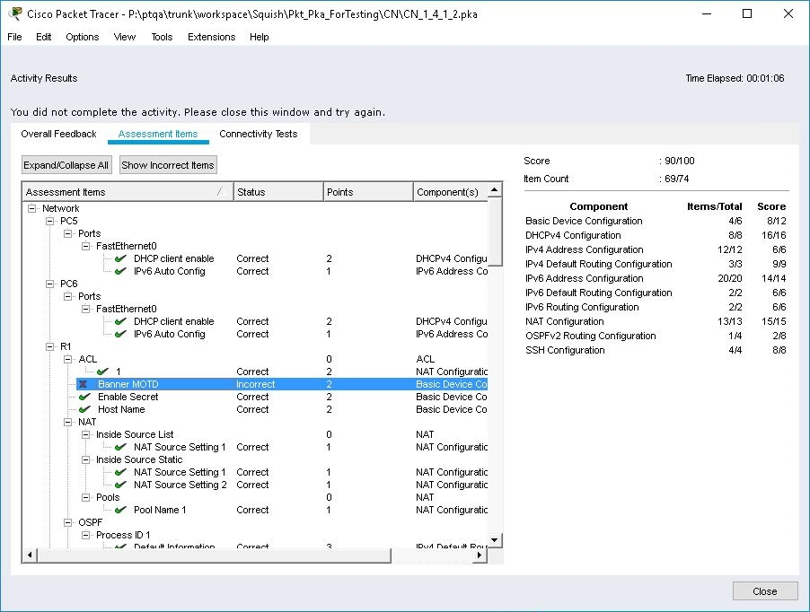
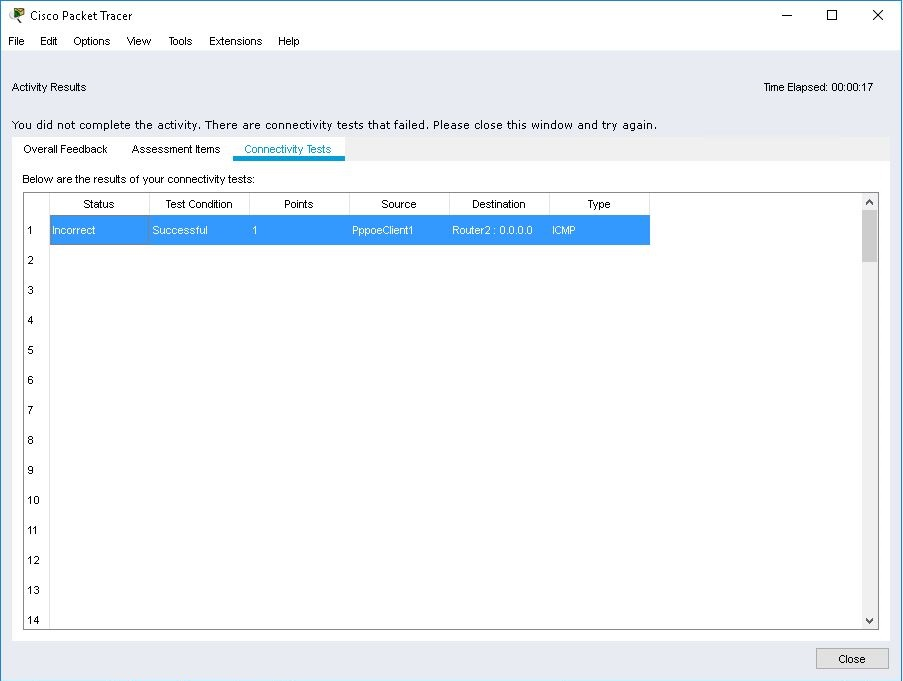

Running Activity Files

You start an activity by opening a saved activity (.pka) file. You will first see the Activity window telling you how to complete the activity. You can reposition or minimize this window to the Windows taskbar as you work on the activity. Dock check box, at the bottom of the Activity window, will control whether this window is docked inside the main application window. Packet Tracer title bar will show the file name with the profile username and the timestamp when the activity is started. If the activity is started and saved prior to Packet Tracer 8.2.1, the timestamp is the last modified time of the file as seen by the filesystem.

Activity window contains three independent tabs - Instructions, Network Topology, Addressing Table and User Notes. All panels can be separated from the Activity window or closed by using buttons in their respective title-bars. They also support context menu that allows users to control zoom level inside each tab. Another way to control tab visibility is by using Tabs menu at the bottom of the Activity window. Activity window will be list in the Window menu in the application menu bar. Activity window will also provide you a Dynamic Percentage Feedback next to the word Completion on how far you are in the activity. A "*" next to the completion value indicates a connectivity test has not been scored yet, this will only be scored in the Check Results window. Optionally, the activity may display a timer, which is either the amount of time that has elapsed since the start of the activity or the amount of time left to complete the activity. The Activity window also contains several buttons and checkboxes: Top, Dock, Check Results, Back and Next. Turning on the Top option will cause the Instruction window to stay on top at all times. Turning on the Dock option will close the Instruction window, and have it as a view in Packet Tracer. Use the Check Results button to see your progress in completing the activity.

Depending on the topology, there may be multiple pages for instructions. Use the Back and Next buttons to go back or forward a page in multiple-paged instructions.| As a user (not the author of the activity), you can use the File > Save (or Save As ) command to save your current progress in the activity and finish the activity later from where you left off. It is preferable to save it as a new file so you do not overwrite the original activity file. When you re-open the file later on, you can still use File > Reset Activity to restart to the initial network. When an activity is restarted, it receives a new timestamp and the change is reflected on the Packet Tracer title bar. |
Network Topology Tab
This tab is dedicated to showing a topology that is the user will consider in the context of the give activity. The exact purpose of the topology shown in this tab will be determined the author of the activity.
Addressing Table Tab
This tab is dedicated to organizing addressing information for this activity into table for convenience and easy reference. Addressing table will be specific to each activity and, just like in the case of Network Topology, the exact purpose and its contents will be determined the author of the activity.
Instructions Tab
Finally, in this tab users will find instructions on how to perform the activity, tasks the must be completed any other information the activity authors will choose to include. Instructions will customarily refer to the information from the other too tabs as required for the activity.
User Notes Tab
In this tab users can make arbitrary notes related to their activities. It is simply a rich text editor embedded inside Activity window. This tab is not available unless activity authors enabled it for a given activity.
Overall Feedback
The Completed Feedback message is shown when the activity is 100% complete. Otherwise, the Incomplete Feedback message is shown.
You can open the view below using Check Results button at the bottom of Activity window.

Assessment Items
The screenshot below displays the results for the Assessment Items. For each Assessment Item, a message will display if it is Correct or Incorrect, which depends on the answer network. An activity is fully completed when there are green checks on all components. A white check indicates that a category is only partially complete. A red x indicates that an assessment item is missing or incorrect. The number of points the assessment item is worth and the component(s) the assessment item belongs to are also shown as well. In this particular screenshot, it shows that the activity was nearly completed, with only a few items incorrect. Also, per-assessment item feedback messages may be shown for incorrect items. Clicking on Show Only Incorrect Items will only show the incorrect items.

Connectivity Tests
The screenshot below shows the Connectivity Test results which are compared to the connectivity test conditions of the answer network.
